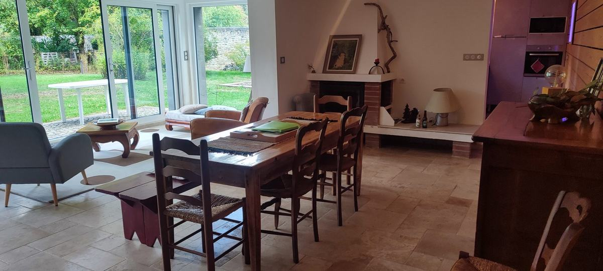
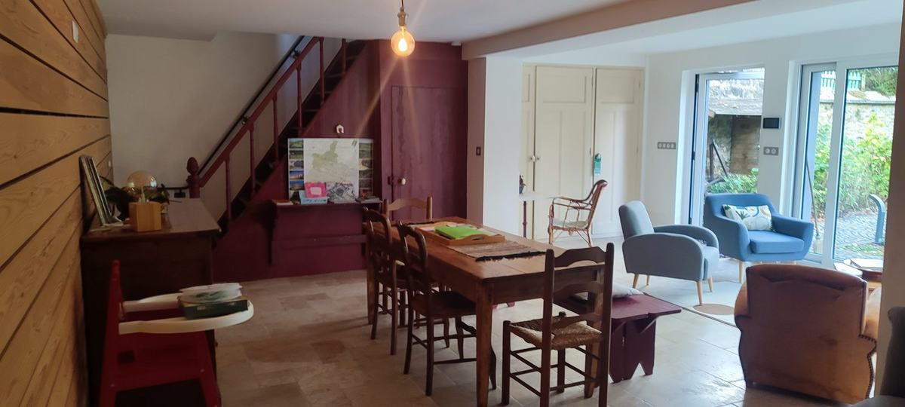
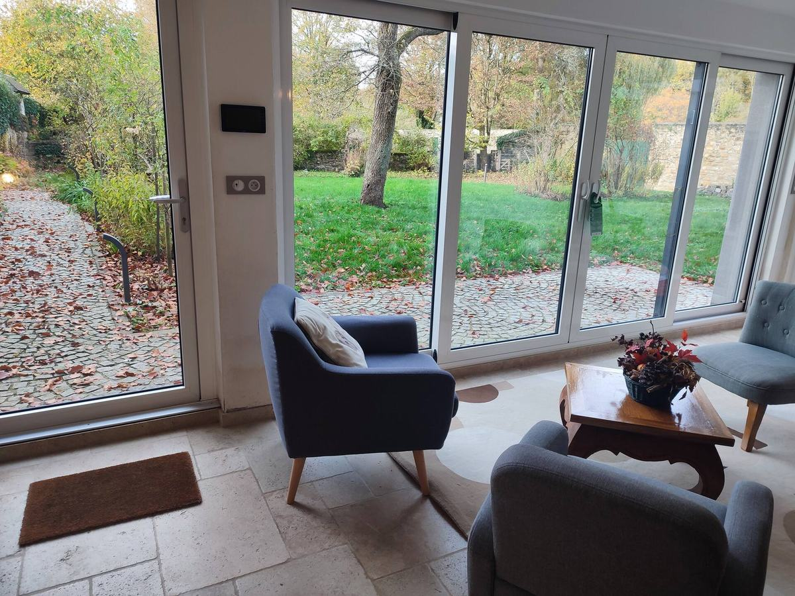
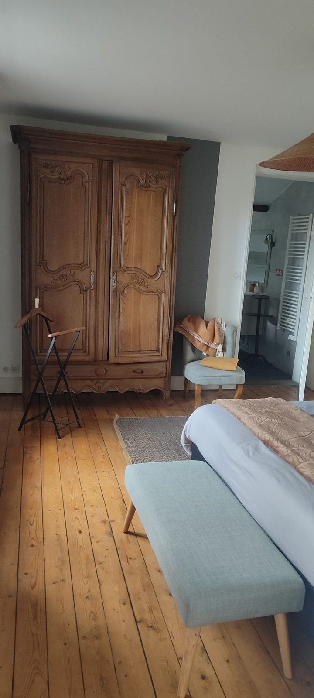
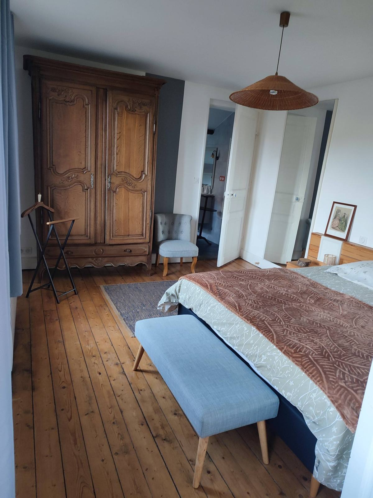
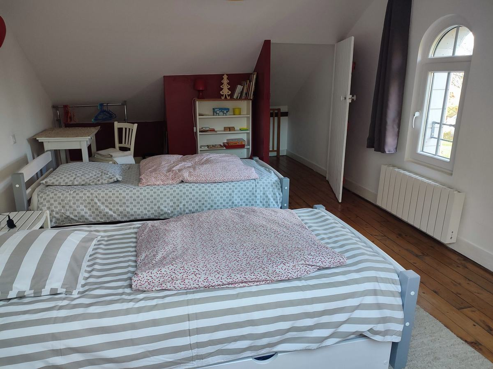
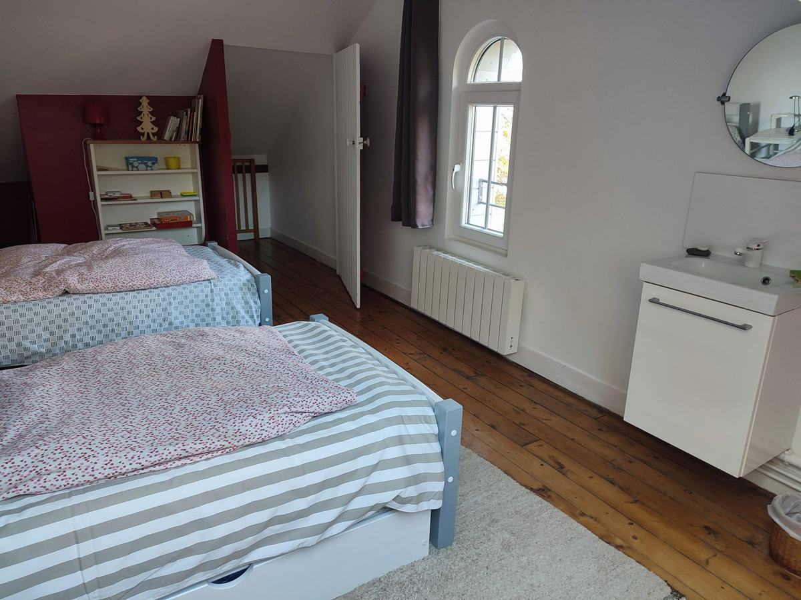
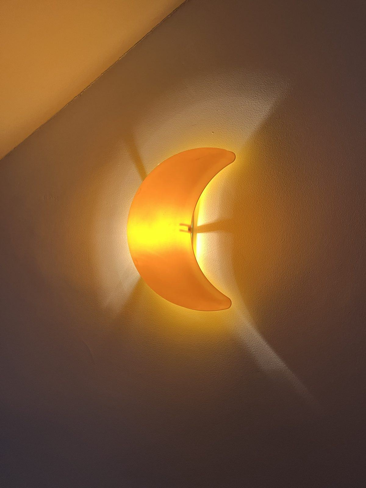
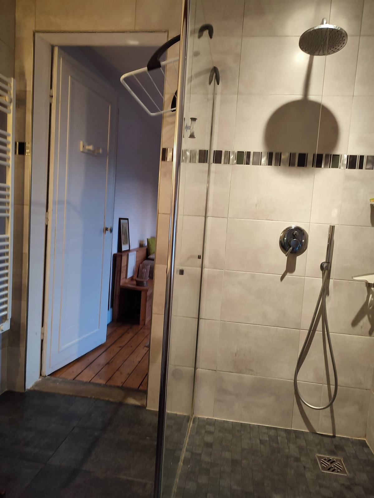

Rénovée avec soin, ouverte sur le jardin
Une maison indépendante du début du XXe siècle, 70 m² sur trois niveaux, classée 3 étoiles. Rénovée avec des artisans de la région et des matériaux à faible empreinte carbone.

Une seule grande pièce, et le jardin au bout
Le rez-de-chaussée est ouvert d’un bout à l’autre : le salon, la salle à manger et la véranda ne font qu’un. Les baies vitrées descendent au niveau du sol et donnent directement sur la terrasse — on sort pieds nus prendre le café.
Sol en travertin, mur en lambris de bois clair, une cheminée, et une table qui accueille six à huit personnes. La bibliothèque est sous l’escalier, avec les jeux.




Équipée pour cuisiner vraiment
Plaque à induction, four, micro-ondes, lave-vaisselle, réfrigérateur, cafetière filtre isotherme, bouilloire, grille-pain. De quoi faire à manger pour cinq sans emprunter quoi que ce soit.
Le mur est orange, celui d’à côté est ocre. La maison n’est pas beige, et c’est voulu.


Deux chambres, deux étages
Les parents au premier, les enfants au second. C’est ainsi que la maison est faite, et c’est ce qui la rend confortable pour une famille.




Au premier
Une grande chambre avec un lit deux personnes, un parquet large et une armoire ancienne. C’est aussi par là que l’on accède à la salle de bain.
Au second
Une chambre sous les combles, avec un lavabo, une fenêtre cintrée et une fenêtre de toit. Deux lits une personne y sont installés en permanence, et j’en monte un troisième à la demande : trois couchages, soit cinq personnes en tout.
La salle de bain
Douche à l’italienne, WC suspendu, lave-linge, poutre apparente. Le linge de maison est fourni, le fer à repasser aussi.
Sous les combles, une douche à l’italienne
Douche à l’italienne de plain-pied, WC suspendu, lave-linge, et une poutre apparente qui rappelle l’âge de la maison. Le linge de toilette et le linge de lit sont fournis.
Elle est au premier étage, et l’on y accède en traversant la chambre. C’est le seul chemin. Je préfère le dire ici plutôt que vous le laisser découvrir en arrivant.

Une chambre d’enfants qui n’est écrite nulle part
La chambre du second n’est pas une chambre d’appoint : elle a été pensée pour les enfants. Une applique en forme de lune, un cœur lumineux au mur, un jeu de lumières colorées au plafond et une petite toile peinte d’un arbre en automne.
Rien de tout cela ne figure sur mes annonces. Il faut y dormir pour le découvrir — et les enfants s’en souviennent mieux que du reste.
Le matériel bébé est à disposition, lit parapluie compris, et le jardin est entièrement clos. Il y a une bibliothèque et des jeux au rez-de-chaussée.



Ce qui est dans la maison
Chauffage
Pompe à chaleur, et une cheminée dans la salle à manger. La maison est ouverte toute l’année.
Cuisine
Lave-vaisselle, four, micro-ondes, plaque à induction, réfrigérateur, cafetière, bouilloire, grille-pain.
Linge
Linge de maison fourni, lave-linge, fer et table à repasser.
Wi-Fi et travail
Wi-Fi gratuit. La gare est à cinq minutes en voiture : la maison convient aussi aux déplacements professionnels.
Dehors
Terrasse de plain-pied, barbecue, mobilier de jardin, 500 m² clos et arborés.
Stationnement
Stationnement gratuit le long de la propriété. Arrêt de la ligne 7 à deux pas, gare à cinq minutes.
Bon à savoir
Une vieille maison a ses contraintes. Je préfère que vous les connaissiez avant de réserver plutôt qu’en arrivant.
- Les escaliers sont raides
- Celui qui monte au premier comme celui qui monte au second : marches étroites, pente forte, c’est une maison ancienne. Rien d’infranchissable si l’on est raisonnablement mobile, mais ce n’est pas confortable avec les bras chargés.
- La salle de bain s’atteint par la chambre du premier
- Il n’y a pas d’autre accès. Pour une famille, cela ne pose aucun problème. Entre adultes qui ne se connaissent pas, c’est un vrai sujet : mieux vaut y penser avant.
- La maison n’est pas accessible aux personnes à mobilité réduite
- Les chambres sont réparties sur deux étages, il n’y a pas d’ascenseur et la salle de bain est au premier. Seuls le séjour, la cuisine et la terrasse sont de plain-pied.
- Un lavabo au second, mais une seule salle de bain
- La chambre du second a son lavabo. Pour la douche et les WC, tout le monde descend au premier.


L’escalier rouge
Il est raide, et il est beau. C’est la première chose que l’on voit en entrant, avec le mur de lambris et le sol en travertin.